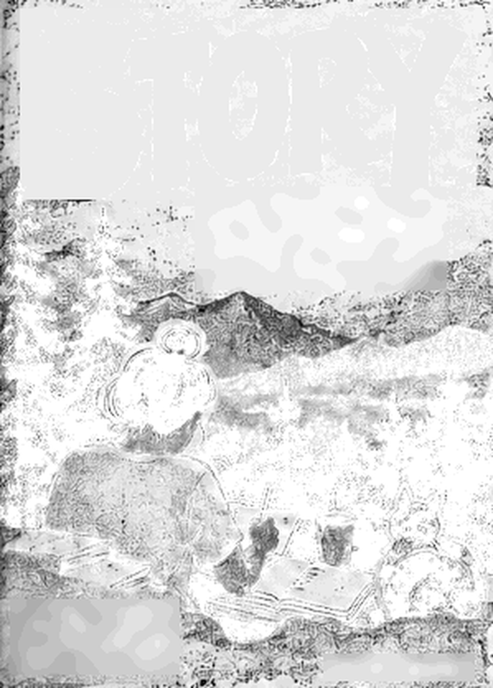
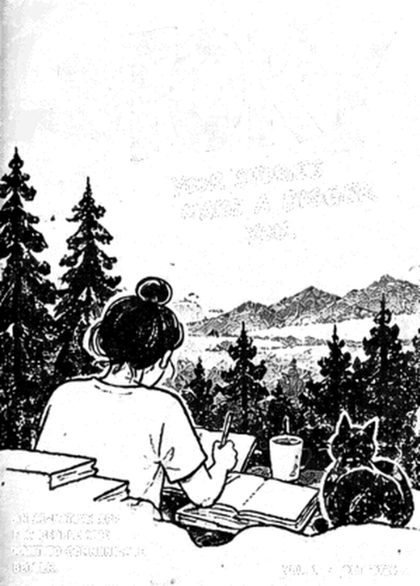
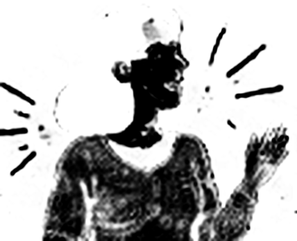
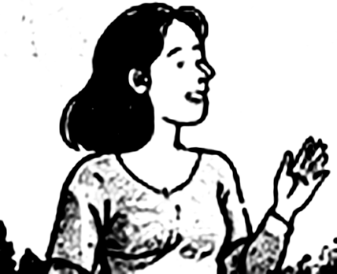
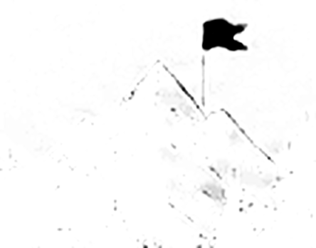
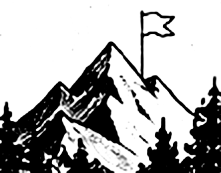
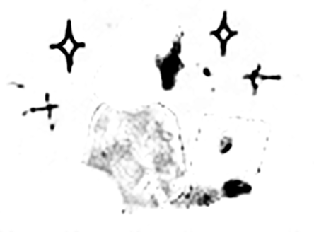
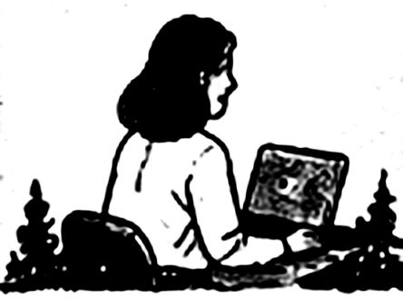

Wins, hard calls, lessons. They fade fast. So when a review or an interview comes round, this is what's left:
Story keeps the real moments, in your own words, and helps you tell them well.
Quickly save stories from your work, life and everything in between.
Get AI suggestions to make your stories clearer, more engaging and tailored for your audience.
Create posts, prepare for performance reviews, practice interviews, or just reflect.
Be a better
communicator
Prepare for
career growth
Reflect and
know yourself
Build your
personal brand






Transcribed on your iPhone.
Voice notes don't need the cloud.
AI is opt-in.
Turn it off and Story still works.
Ideas show their sources.
Each one quotes your words.
You check it first.
Nothing is shared until you confirm.
Printed in two inks: fluorescent pink and medium blue.
Story is in development for iPhone.
Made with analog-ui